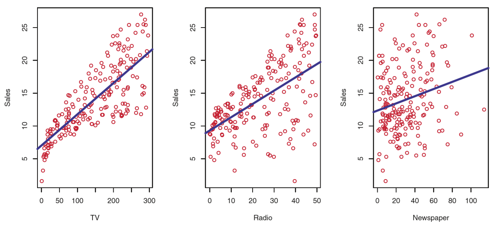
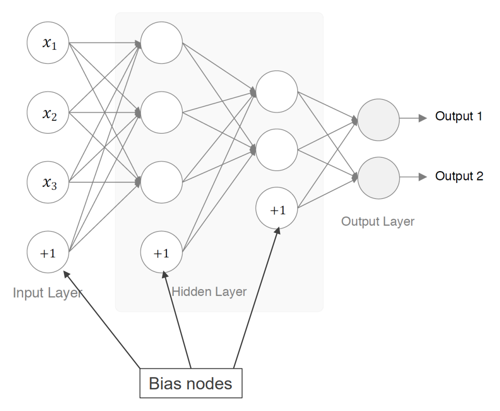
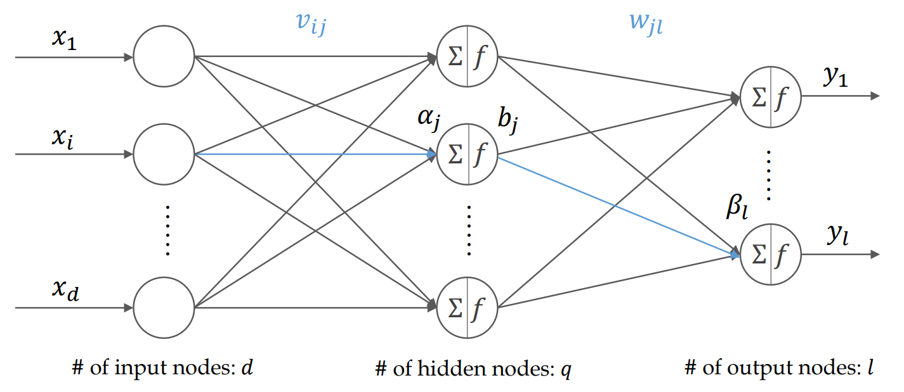

机器学习-课程笔记
本笔记整理自安泰经济与管理学院2022年春季学期课程BUSS2505-02机器学习，授课人是李成璋老师。
Lecture1_Introduction
Applications
Machine Learning is all around us
- Game AI
- Deep blue, IBM
- AlphaGo, Deep Mind
- Deepstack, CMU & Facebook AI
- Robot
- SpotMini, BostonDynamics
- Big Dog
- Image recognition
- Self-driving car
- Medical Diagnosis
- Applications of ML in business settings
- Customer segmentation
- Applications in Finance
- Credit lending & Fraud detection
- Personalized recommendation
- Dynamic pricing
- Rue La La
- Order dispatch for ride-sharing platforms
- DiDi
Economical impact of Machine Learning
- By 2035, AI could double annual global economic growth rates (Accenture)
- Global GDP may increase by up to 14% (the equivalent of US$15.7 trillion) by 2030 as a result of the accelerating development and take-up of AI (PwC)
Trends of Machine Learning

Definition
What is Machine Learning?
- Field of study that gives computers the ability to learn without being explicitly programmed. - Arthur Samuel, 1959
- A computer program is said to learn from experience E with respect to some class of tasks T and performance measure P if its performance at tasks in T, as measured by P, improves with experience E. - Tom Mitchell, 1997
Programming vs Machine Learning

Brief History of Machine Learning
- Connectionism, 1950s
- Perception, F. Rosenblatt
- Checker game, Arthur Samuel, 1959
- The term Machine Learning is coined.
- Symbolism, 1970-1980s
- Decision tree
- ID3, Quinlan
- Classification and Regression Tree (CART)
- Connectionism, 1980-1990s
- Back-Propagation
- for Multi-layer Neural Networks
- Statistical Learning, 1990s
- Support vector machine
- Kernel methods
- Connectionism, 2000s
- Deep Learning
Categories
Categories of Machine Learning
Supervised Learning

- Aims to predict on unknown data using models trained by labeled data
- Learning a function that maps the feature (attribute) to label (response)
- Classification vs Regression
- Both utilize the training set (known data) to make predictions
- The output of classification is categorical (discrete) while the output of regression is numerical (continuous)
Process of Supervised Learning
- Split data into training & test sets
- Train a model
- Make predictions on testing set
- Compare predicted and true labels
Unsupervised Learning

Discover the structure and pattern within the unlabeled data.
- Market Segmentation
- Social Network Analysis
Some Machine Learning algorithms

Lecture2_MathForML
Notations
- $a \in A$ : $a$ is a member of set A
- $||\pmb{v}||$ : the norm of vector $\pmb{v}$
- $\pmb{x},\pmb{y},\pmb{z}$ : vector (lower case, bold)
- $\pmb{A},\pmb{B}$ : matrix (upper case, bold)
- $X$ : random variable (upper case)
- $x$ : realizaton of random variable (lower case)
- $y= f(\pmb{x})$ : function with muitiple inputs
Probability & Statistics
Sample space($\Omega$)
Set of all possible outcomes of an experiment
Event($E$)
Any subset of outcomes contained in the sample space
Event space($\mathcal F$)
The set of all possible events
Axioms of probability
The probabililty distribution P is a function that satisfies the following
- $0 \leq P(E) \leq 1$ for any $E \in \mathcal F$ (Non-negativity)
- $P(\Omega)=1$
- $P(E_1 \cup E_2)=P(E_1)+P(E_2)$ if $E_1$ and $E_2$ mutually exclusive events (Additivity)
Random variable (RV)
mapping from sample space to real numbers
- Probability distribution specifies the probability of observing every possible value of a random variable
- Discrete RV has a countable set of possible values: Bernoulli, Poisson, …
- Continuous RV can take infinitely many possible values: Uniform, Normal, Exponential, …
Probability distribution
Cumulative distribution function (CDF)
Discrete random variable: probability mass function $p_X(x)$
Continuous random variable: probability density function $f_X(x)$
Joint distribution
Consider two random variables $X$ and $Y$ , the joint cumulative distribution function is defined as
The joint probability mass function of two discrete variables $X$ , $Y$
The joint probability density function of two continuous variables $X$ , $Y$
Conditional probability
The conditional probability of $X$ given $Y=y$ is defined as,
Product rule
Bayes’ rule
- Application: SPAM email case
- y: labels (SPAM/normal)
- x: frequency of keywords
Marginal probability
The probability of event that will occur regardless of conditional events
Independence
Consider two events $A$ and $B$ , they are independent if
In addition, (if they are independent: )
Expectation
Expectation (expected value) of a random variable $X$ is computed as
- Discrete RV
- Continuous RV
- Expectation of functions
- Other properties:
Conditional expectation
The conditional expectation of $X$ with respect to $Y$ is the function
Discrete random variable
Continuous random variable
Law of total expectation
Variance
The squared deviation of $X$ from its mean
- Standard variation
- Other properties
Covariance
Estimation of Parameters
- Suppose we have random variables $X_1, X_2, \cdots, X_n$ and corresponding observations $x_1, x_2, \cdots, x_n$
- We select a parametric model and fit the parameters of the model to the data.
- How do we choose the values of the parameters $\theta$ ?
Maximum Likelihood Estimation (MLE)
Which $\theta$ makes the observations $x_1,x_2,\cdots,x_n$ most likely?
- Maximize the likelihood of the observed data
- Assume that $x_1,x_2, \cdots,x_n$ are i.i.d., we have
- Take the logarithmic on both sides, we obtain the log-likelihood
Example of MLE
- Imagine a bowl contains a large number of red and white balls. The proportion of the red balls, denoted by $\theta$ , is unknown.
- Now we sample balls from this bowl with replacement for $n$ times and observe $x$ red balls out of $n$ balls.
- Likelihood function:
Maximum A Posteriori Estimation (MAP)
Which $\theta$ maximizes the posterior $p(\theta | x_1,x_2,\cdots,x_n)$ given the prior $p(\theta)$ ?
- We assume that the parameter is a random variable, and we specify a prior distribution $p(\theta)$
- By Bayes’ rule, we compute the posterior of the parameter
- Estimate parameter $\theta$ by maximizing the posterior
- We take the logarithmic of the posterior,
: MAP: balance MLE and prior knowledge
Example of MAP
- Imagine a bowl contains a large number of red and white balls. The proportion of the red balls, denoted by $\theta$ , is unknown, but with a Beta prior, $P(\theta) =\cfrac{\Gamma(\alpha + \beta)}{\Gamma(\alpha)\Gamma(\beta)}\theta^{\alpha-1}(1-\theta)^{\beta-1}$
- Now we sample balls from this bowl with replacement for $n$ times and observe $x$ red balls out of $n$ balls.
- The posterior function:
Linear Algebra
Vector
- A one-dimension array of $n$ values, denoted by $\pmb{x}$ (lower case, bold)
- $x_i$ is the $i$-th element of $\pmb{x}$
Matrix
- A two-dimension array of $m \times n$ values, denoted by $\pmb{A}$ (upper case, bold)
- $m$ is the number of row vector, $n$ is the number of column vectors
- $a_{ij}$ is the entry in $i$-th row and $j$-th column
Vector algorithmic
- Scalar multiplication of a vector
- Dot product of the vectors $\pmb{x},\pmb{y} \in \mathbb{R}^n$
- Outer product of the vectors $\pmb{x} \in \mathbb{R}^m, \pmb{y} \in \mathbb{R}^n$
Vector norm
A norm $||\cdot||$ is a function that satisfies
- $||\pmb{x}|| \geq 0$ with equality if and only if $\pmb{x}=\pmb{0}$
- $||\pmb{x}+\pmb{y}|| \leq ||\pmb{x}|| + ||\pmb{y}||$
- $||a\pmb{x}||=|a|||\pmb{x}||$
- $\pmb{x}^T\pmb{y}=||\pmb{x}||_2||\pmb{y}||_2\cos(\theta)$
- $l_1$ norm $||\pmb{x}||_1=\displaystyle\sum_{i=1}^n|x_i|$
- $l_2$ norm $||\pmb{x}||_2=\left(\displaystyle\sum_{i=1}^n|x_i|^2\right)^{\frac{1}{2}}$
Matrix arithmetric
- Addition of matrices $\pmb{A},\pmb{B} \in \mathbb{R}^{m\times n}$
- Scalar multiplication of a matrix
- Multiplication of matrices $\pmb{A} \in \mathbb{R}^{m \times n}$ and $\pmb{B} \in \mathbb{R}^{n\times p}$
- Matrix multiplication is associative: $\pmb{A}(\pmb{B}\pmb{C})=(\pmb{AB})\pmb{C}$
- Matrix multiplication is distributive: $\pmb A (\pmb B+\pmb C)=\pmb{AB}+\pmb{AC}$
- Matrix multiplication is NOT communicative: $\pmb{AB} \neq \pmb{BA}$
Transpose
Given a matrix $\pmb A \in \mathbb R^{m\times n}$ , its transpose, written by $\pmb A^T \in \mathbb R^{n\times m}$ , is given by
Some properties
- $(\pmb{AB})^T=\pmb B^T\pmb A^T$
- $(\pmb A^T)^T=\pmb A$
- $(\pmb A+\pmb B)^T=\pmb A^T+\pmb B^T$
Symmetric matrix
A square matrix is symmetric if $\pmb A =\pmb A^T$.
Inverse of a matrix
For a matrix $\pmb A\in \mathbb R^{n\times n}$ , if there exists a square matrix $\pmb B \in \mathbb R^{n\times n}$ such that
where $\pmb I$ is the $n$-by-$n$ identity matrix, then $\pmb B$ is the inverse of $\pmb A$.
- The inverse of $\pmb A$ is denoted by $\pmb A^{-1}$
- A matrix is invertible if it is not singular.
Solving a linear system
If $\pmb A$ is square nonsingular matrix, then the solution to the linear system $\pmb{AX}=\pmb b$ is given by
Semidefinite matrices
A symmetric matrix $\pmb A \in \mathbb S^{n\times n}$ is
- positive semidefinite if $\pmb x^T \pmb{Ax} \geq 0$ for any $\pmb x \in \mathbb R^n$ and $\pmb x \neq \pmb 0$ , denoted by $\pmb A \succcurlyeq 0$ ;
- positive definite if $\pmb x^T \pmb{Ax} \textgreater 0$ for any $\pmb x \in \mathbb R^n$ and $\pmb x \neq 0$ , denoted by $\pmb A \succ 0$ ;
- negative semidefinite if $-\pmb A$ is positive semidefinite;
- negative definite if $-\pmb A$ is positive definite;
- indefinite if it is neither positive nor negative definite.
Back to Probability & Statistics
Random vector
A vector of random variables $X_1,X_2,\cdots,X_n$, denoted by $\pmb X=[X_1,X_2,\cdots,X_n]^T$
- $\mathbb E[X]=[\mathbb E[X_1],\mathbb E[X_2],\cdots,\mathbb E[X_n]]^T$
Covariance matrix
Matrix calculus
Consider a function $f:\mathbb R^n \rightarrow \mathbb R$ , the gradient of $f$ is defined as a vector of partial derivatives
“direction and rate of fastest increase“
- The direction of fastest increase of the function
- The magnitude is the rate of increase
Consider a function $f: \mathbb R^n \rightarrow \mathbb R$, the Hessian of $f$ is defined as
What is optimization?
Finding the minimizer of a function subject to constraints:
- Mean-variance analysis
- Transportation problems
- Facility location
- Linear regression
- Logistic regression
- Support vector machine
- Neural networks
Local minima and global minima
- Local minima is the solution that optimal within a neighboring set
- Global minima is the optimal solution among all possible solutions

Convex set
A set $C\in \mathbb R^n$ is convex if for $\pmb x,\pmb y\in C$ and any $\alpha\in [0,1]$, 
Examples: $\mathbb R^n$ , norm ball {$\pmb x: ||\pmb x|| \leq r$} for a given $r$ , intersection of convex sets
Convex (Concave) function
A function $f:\mathbb R^n \rightarrow \mathbb R$ is convex (concave) if for $\pmb x,\pmb y \in \text{dom}(f)$ and any $\alpha \in [0,1]$ , 
First-order convexity condition
Suppose a function $f:\mathbb R^n \rightarrow \mathbb R$ is differentiable. Then $f$ is convex if and only if for all $\pmb x,\pmb y \in \text{dom}(f)$ 
Second-order convexity condition
Suppose a function $f:\mathbb R^n \rightarrow \mathbb R$ is twice differentiable. Then $f$ is convex if and only if for all $\pmb x \in \text{dom}(f)$ 
Examples of convex functions
- Exponential function: $e^{ax}$
- Logarithmic function: $\log(x)$ is concave
- Affine function: $\pmb a^T\pmb x+b$ is a convex and concave
- Least square loss: $||\pmb y-\pmb{X\beta}||_2^2$
- $f_1(x)$ is convex for $x\in \text{dom}(f_1)$ and $f_2(x)$ is convex for $x\in \text{dom}(f_2)$ , then $f_1+f_2$ is convex for $x\in \text{dom}(f_1) \cap \text{dom}(f_2)$
Convex optimization problem
An optimization problem is convex if its objective is a convex function, the inequality constraints $f_j$ are convex, and the equality constraints $h_j$ are affine.
It’s nice to be convex!
- $\nabla f(\pmb x)=0$ if and only if $\pmb x$ is a global minimizer of $f(\pmb x)$ .
- If $\pmb x$ is a local minimizer of a convex optimization problem, it is a global minimizer.
Optimization methods
- Gradient descent
- Newton’s method
- Coordinate descent
- Lagrangian method
Lecture3_BasicInML
Generalization ability (泛化能力)
- A model’s ability to generalize to new data
- If the model is trained too well, it can fit perfectly the random fluctuatioins or noise in the training data but it will fail to predict accurately on new data

Underfitting and overfitting
Underfitting (欠拟合) occurs when a statistical model or machine learning algorithm cannot capture the underlying trend of the data.

Overfitting (过拟合) occurs when a statistical model describes random error or noise instead of the underlying relationship.

Basic terms
- A sample is denoted by $(\pmb x_i,y_i)$ where $\pmb x_i$ is the attribute (feature) vector and $y_i$ is the label (response).
- A list of $m$ samples is a dataset, denoted by $D$ .
- Training set, denoted by $S$ , is used to train the model
- Test set, denoted by $T$ , is used to evaluate the performance of the model
- A mapping from the attribute space (特征空间) $\mathcal X$ to the label space (标签空间) $\mathcal Y$ , denoted by $f$ , is called a hypothesis (假设).
- The set of all possible hypotheses is called hypothesis space (假设空间), denoted by $F$ .
Loss function
- Suppose $\hat f(\pmb x)$ is obtained using the training set $S$
- For an unknown sample $(\pmb x_0,y_0)$ , the error between the prediction $\hat f(\pmb x_0)$ and the observed value $y_0$ is measured by the loss function (损失函数)
- Examples
- $L(\hat f(\pmb x),y)=\mathbb I(\hat f(\pmb x)\neq y)$ (binary classification)
- $L(\hat f(\pmb x),y)=(\hat f(\pmb x)-y)^2$ (regression)
Generalization error
Generalization error (泛化误差)
- The expectation is taken over the joint distribution of $(\pmb x ,y)$
Test error (测试误差)
- Given a set of test samples $T=\{(\pmb x_i,y_i):i=1,2,\cdots,n\}$ , the test error is given by
Training error (训练误差)
- Given a set of training samples $S=\{(\pmb x_i,y_i):i=1,2,\cdots,m\}$ , the training error is given by
Learning objective
- Select a hypothesis $f\in F$ with the smallest generalization error.
- However, the true distribution of $(\pmb x,y)$ is usually unknown in practice.
- We obtain the hypothesis by minimizing the training error with the training set $S=\{(\pmb x_i,y_i):i=1,2,\cdots,m\}$ ,
Training error vs test error

Performance metrics
Classification
Performance metrics for classification
- Consider a binary classifier $\mathcal Y =\{-,+\}$

Confusion matrix

- True Positive (真正例) - we predicted “+” and the true class is “+”
- True Negative (真反例) - we predicted “-“ and the true class is “-“
- False Positive (假正例) - we predicted “+” and the true class is “-“
- False Negative (假反例) - we predicted “-“ and the true class is “+”
Accuracy
- The relationship with the misclassification error rate (分类错误率),
Limitation of Accuracy
- A predictive model may have high accuracy, but be useless.
- Suppose the positive class is only a tiny portion of the observed data. For example, only 1% of patients has true cancer while other 99% of patients don’t have any cancers.
- Consider a “stupid” model that always predicts “no cancer”, what is the accuracy?
Precision(查准率)
Recall(查全率)
- Which one is worse, False Positive or False Negative?
- It depends!
- Medical Diagnosis - False Negative
- Span Detection - False Positive
$F_1$ score
- How to compare precision/recall and decide which algorithm is better?
$F_1$ score: a combined measure
Which metric to use?
- Accuracy
- The class distribution is balanced
- FP and FN costs are similar
- $F_1$ score
- The class distribution is unbalanced
- FP and FN costs may be different
- Recall
- The cost of FN is much higher than that of FP
- e.g. rather get healthy people labeled as sick over leaving a infected person labeled healthy
- Precision
- The cost of FP is much higher than that of FN
- e.g. rather have some span emails in inbox than some regular emails in your spam box
Regression
Performance metrics for regression
- The common performance measure for regression is mean squared error (MSE) .
- For a dateset $D=\{(\pmb x_i,y_i):i=1,2,\cdots,m\}$ ,
- Some other performance measures
- Root Mean Square Error (RMSE)
- Mean Absolute Error (MAE)
- $R^2$
Bias-variance decomposition
- Given a training set $S=\{(\pmb x_i,y_i),i=1,2,\cdots,m\}$ such that each sample $(\pmb x_i,y_i)$ satisfies the following relationship
- $\epsilon$ is the noise with mean zero and variance $\sigma^2$ .
- Let $\hat f(\pmb x;S)$ denote the estimated function that is trained with the set $S$
For an unseen sample $(\pmb x_0,y_0)$ ,
- the predicted value using the function trained with $S$ is $\hat f(\pmb x_0;S)$
- the expected predicted value is $\mathbb E_S[\hat f(\pmb x_0;S)]$
- the true value is $f(\pmb x_0)$
- the bias (偏差) of the predicted value is
- the variance (方差) of the predicted value is
- the expected squared error, where the expectation is over the random noise and the training set, is given by
- proof:
The variance represents how much the trained model move about its mean.
The bias represents the difference between the expected prediction of our model and the true value.


The ideal case is that we reduce both the bias and variance to reduce the total error.
- However, there is a trade-off between the bias and variance.
- High bias: more features, more complex models, better optimization, boosting, …
- High variance: more data, regularization, less features, less complex models, bagging, …

Model selection
Fit the data (blue dots) using polynomials with different degrees of freedom.
- How to select the appropriate model with good fit?

Principle of Occam’s razor (奥卡姆剃刀)
- Select the hypothesis with the fewest assumptions among all competing hypotheses that explain known observations equally well.

Regularization
- Regularization(正则化) refers to the process of adding additional terms to our loss function, often to introduce a preference for simpler models
- It aims to reduce the generalization error but not its training error.
- Recall the training error $\hat R_S(f)=\cfrac{1}{m}\displaystyle\sum_{i=1}^mL(f(\pmb x_i),y_i)$ , we search for the hypothesis that leads to the smallest training error
Minimization problem with regularized loss function

$L_2$ regularization

$L_1$ regularization

Hyperparameter(超参数)
- The parameter is determined before the learning process
- Example: the degree of the polynomial, the regularization coefficient.
- It can not be adopted by the learning algorithm from the training data
- How to find the optimal hyperparameter?
- Set it to different values
- Evaluate the corresponding models
- Choose the one that results in the best performance
Validation strategy
Hold-out validation
- Split the training set into two parts: a training set and a validation set

Cross validation
- K-fold cross validation: divide the training set into k equal size subsets

Leave-one-out cross validation
K-fold cross validation where $k=m$

Use one observation as the validation set
- Each sample is used once for validation
- It could be vary computationally intensive!
Which validation strategy to use?
- Large data set
- Hold-out validation is simpler testing and computationally cheaper.
- Hold-out strategy is suitable when the amount of data is huge.
- Small data set
- Cross-validation is useful when the dataset is small.
- 10-fold cross validation is common, but smaller values of k are often used when learning takes a lot of time
Lecture4_LinearModels
Linear Regression
Motivating example
- The Advertising data set consists of the sales of that product in 200 different markets, along with advertising budgets for the product in each of those markets for three different media: TV, radio and newspaper.

Simple linear regression
- Assuming approximately a linear relationship between $X$ and $Y$
- Predicting $\hat y$ based on $x$

Estimating the parameters
Mean square error (MSE)

FInd the linear function with the smallest MSE
- FOCs:

Multivariate linear regression
- We ignore the other two factors when estimating the coefficients
- How to make predictions given the levels of the three advertising media?
In general, with $n$-dimension features,
Choose $b,w_1,\cdots,w_n$ to minimize the following
Choose $\beta$ to minimize the following objective
To minimize $L(\pmb\beta)$ , we set its derivatives to zero and obtain the normal equations
Suppose $\pmb X^T\pmb X$ is invertible,
Ridge regression
- What if $\pmb X^T\pmb X$ is not invertible?
- To minimize $L(\pmb\beta)$ , we set its derivatives to zero:
- The estimator from Ridge regression is computed as:
Regularized linear regression
$\lambda$ : Regularization coefficient;
$E(\pmb\beta^T\pmb x)$ : Regularization term
- L2 regularization (Ridge regression)
- $E(f=\pmb\beta^T\pmb x)=||\pmb\beta||_2^2$
- $\lambda\rightarrow 0, \hat{\pmb\beta}_\text{ridge}\rightarrow\hat{\pmb\beta}_{OLS}$
- $\lambda\rightarrow\infty,\hat{\pmb\beta}_\text{ridge}\rightarrow 0$
- L1 regularization (Lasso regression)
- $E(f=\pmb\beta^T\pmb x)=||\pmb\beta||_1$
- Some of coefficient estimates tend to zeros
- Variable selection (sparse models)
Regularization
Ridge vs. Lasso: which one is better?
- Case 1: A relatively small number of features have substantial coefficients and the remaining features have parameters that are very small or equal to zero.
- Lasso regression
- Case 2: The response is a function of many features, all with parameters of roughly equal size.
- Ridge regression
- Neither ridge nor lasso regression would universally dominate the other
- Which approach to use? How to determine $\lambda$ ?
- Cross validation!
Linear regression: Probabilistic View
Recap: Probability & Statistics
The multivariate Gaussian distribution
A random vector $X$ is said to have a multivariate normal (Gaussian) distribution with mean $\mu\in\mathbb R^n$ and covariance matrix $\Sigma \in S_{++}^n$
Linear regression: Probabilistic View
Assume the response $Y$ is given by a deterministic function and an additive Gaussian noise.
- The linear regression estimator is the maximum likelihood estimator of the data.
- The likelihood function
- The log-likelihood function
- Given dataset $(\pmb X,\pmb y)$ , find $\pmb\beta$ that can maximize the log-likelihood of $\pmb y$ .
Ridge regression: Probabilistic View
- Assume the response $Y$ is given by a deterministic function and an additive Gaussian noise.
- Suppose $\pmb\beta$ has the prior $p(\pmb\beta)=\mathcal N(0,\tau^2\pmb I)$
- Ridge regression estimator is a MAP estimator with Gaussian prior
Classification
- In many situation, the response variable is qualitative.
- Classification is a process of predicting qualitative responses.
- Examples
- Medical diagnosis: predict whether a patient is sick or healthy
- Spam detection: predict whether an email is spam or not
- Credit card fraud: predict whether a given credit card transaction is fraud or not
- Marketing: predict whether a given user will buy a product or not
- Classifiers
- Logistic regression
- Support vector machine (SVM)
- Naïve Bayesian
- …
Logistic regression
Why not linear regression?
Can we use linear regression to predict the probability of default?
- The probability of default could be negative when balances close to 0, and could be bigger than 1 when the balances are large.
- We must model $p(\pmb x)$ as a function that gives output between 0 and 1.

Logistic function
- bounded in (0,1)
- $\sigma(z)\rightarrow 1$ when $z \rightarrow \infty$
- $\sigma(z)\rightarrow 0$ when $z\rightarrow -\infty$
- $\sigma^\prime(z)=\sigma(z)(1-\sigma(z))$
Binary classification using logistic function
Interpretation of logistic regression
- Let $p(\pmb x)=\cfrac{1}{1+e^{-(\pmb w^T\pmb x+b)}}$, the odds(几率) is given by,
- If we take the logarithm on both sides,
- The logit of an event’s odds is predicted by a linear model.
- One-unit increase in $x_i$ changes the log-odds by $w_i$ holding all other features fixed.
Training the logistic function
- We use the maximum likelihood estimation (MLE) to estimate $b$ and $\pmb w$
Let $\pmb \beta=[b;\pmb w]$ , the likelihood function is given by
We can equivalently minimize the negative log-likelihood function
Maximum Likelihood Estimation (MLE)
- There is no closed-form solution for the above optimization problem
- Fortunately, $\mathcal l(\pmb\beta)$ is a convex function, we can apply the gradient descent method to find the optimal solution.
Gradient descent method (梯度下降法)
- Recall: gradient is the direction of fastest increase
- Updating rule
- Search procedure
- Choose an initial value for $\pmb\beta$
- Update $\pmb\beta$ iteratively
- Take the derivative of $\mathcal l(\pmb\beta)$
- Move the parameters in the direction of steepest descent
- Stop until convergence

Batch gradient descent (批量梯度下降)
Update $\pmb\beta$ using the whole batch

Stochastic gradient descent (随机梯度下降)
Update $\pmb\beta$ using single data sample

Mini-batch gradient descent (小批量梯度下降)
- A combination of batch GD and stochastic GD
- Split the whole dataset into $K$ mini-batches $\{1,2,3\cdots,K\}$
- For each mini-batch $k$, perform one-step BGD to minimizeUpdate $\pmb\beta$ using a mini-batch of data samples
Choice of learning rate (学习速率)

- Gradient descent would take long time to converge and can be very slow

- May overshoot the minimum
- The algorithm may fail to converge, or even diverge

- For sufficiently small $\eta$, the loss function should decrease on every iteration.
- Plot the loss function as a function of number of iterations to see if the learning rate is appropriate
Making prediction
Label decision and thresholds
- Logistic regression provides the probability of one event belonging to a class or another
- The final label of an instance is decided by setting a threshold $h$ (typically 0.5)
How to choose the threshold?
| | Higher threshold | lower threshold |
|—-|—-|—-|
| False Negative (FN) | $\uparrow$ | $\downarrow$ |
| False Positive (FP) | $\downarrow$ | $\uparrow$ |Don’t get confused by its name! It’s a classification rather than regression algorithm
Another evaluation measure: ROC curve
Receiver Operating Characteristic (ROC) curve
- ROC curve plots True Positive rate vs. False Positive rate at different thresholds between 0 and 1
- It shows the trade-off between true-positive rate and false-positive rate of classification algorithms
- True Positive rate (recall, 真正例率)
- False Positive rate (假正例率)

ROC curve and AUC (area under the curve)

- In this example, Classifier A is better than B, which is better than random guessing

- Compare multiple models by a single number
- Higher AUC will be the better
- However, it does not tell us the performance of the model for a given threshold setting
Regularization in logistic regression
- Without regularization, the logistic regression would keep driving the loss towards 0 in high dimensions.
- L1 regularization
- L2 regularization
- Early stopping, that is, limiting the number of training steps or the learning rate.
Multiclass classification (多分类)
- Email tagging: Work, Friends, Family, Hobby
- Medical diagrams: Healthy, Cold, Flu
- Weather: Sunny, Windy, Rainy

Multinomial logistic regression (多项逻辑回归)
- The label can take values from the set $\{1,2,\cdots,K\}$
- The multinomial logistic regression model is given as,
- The parameters can be estimated by the MLE approach
One-vs-Rest (OvR)

One-vs-One (OvO)

Lecture5_FeatureEngineering
Introduction
Data understanding
Structured versus unstructured data
Quantitative versus qualitative data
Exploratory data analysis: descriptive statistics and data visualizations
Data processing
Missing values
Class imbanlance
Feature scaling & discretization
Feature encoding & text data representation
Lecture7_NeuralNetworks
Overview of neural networks
Structure of neurons in human brain
- The human brain can be described as a biological neural network—an interconnected web of neurons transmitting elaborate patterns of electrical signals.
- Dendrites receive input signals and, based on those inputs, fire an output signal via an axon.

- Dendrite (树突): It receives signals from other neurons
- Cell body: It sums all the incoming signals to generate input
- Axon (轴突): When the sum reaches a threshold value, neuron fires and the signal travels down the axon to the other neurons
Artificial neurons
- Artificial neurons (人工神经元) are the basic computing units of information processing in an artificial neural network (人工神经网络).
- The dendrites carry the signals (inputs $\pmb x$) to the cell body where they all get summed (weighted sum of inputs)
- Synaptic strength (突触强度) controls the strength of the influence and direction (weights $\pmb w$)
- Cell body reaches certain threshold and sends a spike to the next axon (activation function $f$)
- Axons pass signals (outputs $\pmb y$) to other neurons (nodes)
Artificial Neural Networks (ANN)
- Artificial neural networks (ANN) are computing systems inspired by the biological neural networks.
- It is comprised of a network of artificial neurons (nodes).

- The connections between units do not form a cycle.
The information moves in only one direction.
Artificial neural networks (ANN) is best used
- For modeling highly nonlinear systems
- When the model interpretability is not a key concern
- When data is available incrementally and you wish to constantly update the model
- Applications
- Image recognition
- Speech recognition
- Natural language processing
- Game AI
- …
History of neural networks
- The First wave
- 1943 McCulloch and Pitts proposed the McCulloch-Pitts neuron model (M-P神经元)
- 1958 Rosenblatt introduced the simple single layer networks now called Perceptrons (感知机).
- 1969 Minsky and Papert’s book Perceptrons demonstrated the limitation of single layer perceptron, and almost the whole field went into hibernation.
- The Second wave
- 1986 The Back-Propagation learning algorithm (反向传播学习算法) for Multi-Layer Perceptrons was rediscovered and the whole field took off again.
- The Third wave
- 2006 Deep (neural networks) Learning (深度学习) gains popularity
- 2012 made significant break-through in many applications
- AlexNet: Geoffrey Hinton, IIya Sutskever, Alex Krizhevsky
- Google Brain: Jeff Dean, Andrew Ng
Perceptron model
- Rosenblatt’s single layer perceptron, 1958
- The simplest feedforward neural network. It does not contain any hidden layers.
- It computes the weighted output, and uses a threshold activation function to output a quantity.

- Activation function (激活函数)
- Prediction
Training the Perceptron model
- Perceptron uses iterative algorithm to learn a correct set of weights
- Updating rule
- $\eta$ : Learning rate
- $y$ : Target output
- $\hat y$ : Perceptron output
- Rosenblatt proved the convergence of the learning algorithm, if
- the training data is linearly separable
- $\eta$ is sufficiently small
Representation of Boolean functions (布尔函数)

- AND ($x_1 \wedge x_2$ , 与)
- $w_1=w_2=1,b=-1.5$
- OR ($x_1\vee x_2$ , 或)
- $w_1=w_2=1,b=-0.5$
- NOT ($\overline{x_1}$ , 非)
- $w_1=-0.6,w_2=0,b=0.5$
Limitation of Perceptron model
XOR ($\overline{x_1}\wedge x_2+\overline{x_2}\vee x_1$ , 异或)
| Input | | Output |
|—-|—-|—-|
| $x_1$ | $x_2$ | $y$ |
| 0 | 0 | 0 |
| 0 | 1 | 1 |
| 1 | 0 | 1 |
| 1 | 1 | 0 |

- XOR is not linearly separable
- Some elementary computations such as XOR cannot be represented by Rosenblatt’s single layer perceptron
Solution - Add a hidden layer

Multi-layer feedforward neural networks
Input layer (输入层)
- No computation performed
- Pass information to hidden layers
Hidden layer (隐藏层) - Intermediate layer between input and output layers
- Activation function apply on those layers
- Can be multiple hidden layers
Output layer (输出层) - Transferring information to outside world


Forward prediction
For the training sample $(\pmb x_k,\pmb y_k)$ , the square error loss is
The accumulated square error loss of dataset $S=\{(\pmb x_k,\pmb y_k): 1,2,\cdots, m\}$ is
Back-Propagation algorithm

- Use gradient descent method to train the neural network
- Updating rules
- Learning $\pmb w$
Input: learning rate 𝜂 and data set 𝑆 = {(𝒙_𝑘, 𝒚_𝑘, 𝑘=1,2, … ,𝑚}Initialize: 𝒘, 𝒗Procedure: Repeat until convergence
For training sample k = 1,2,…,m do
Calculate predictions \hat 𝒚_𝑘 %Feedforward prediction
Calculate 𝑔_𝑡,𝑡=1,2, … 𝑙 %Back-propagate errors
Calculate 𝑒_𝑗,𝑗=1,2, … 𝑞 %Back-propagate errors
Calculate Δ𝒘, Δ𝒗 %Calculate weights gradients
Update 𝒘, 𝒗 %Update weights

An calculation example

Assume that the neurons have a Sigmoid activation function:
- Perform a forward pass on the network
- Perform a reverse pass (training) once with target = 0.5 and learning rate = 1
- Perform a further forward pass and comment on the results
(i)
Input to the top neuron: $(0.35\times0.1) + (0.9 \times 0.8) = 0.755$. $Out_1 = 0.68$
Input to the bottom neuron: $(0.9 \times 0.6) + (0.35 \times 0.4) = 0.68$. $Out_2 = 0.6637$
Input to the final neuron: $(0.3 \times 0.68) + (0.9 \times 0.6637) = 0.80$. $Output = 0.69$
(ii)
Output error $g = (y − \hat y)(1 − \hat y)\hat y = (0.5 − 0.69)(1 − 0.69)0.69 = −0.0406$
Errors for the hidden layer $e_1 = 𝑔 \times 𝑤_1 \times (1 − out_1) \times out_1 = −0.0406 \times 0.3 \times (1 − 0.68) \times 0.68 = −0.00265$
$e_2 = g \times w_2 \times (1 − out_2) \times out_2 = −0.0406 \times 0.9 \times (1 − 0.6637) \times 0.6637 = −0.008156$
Update the weights for the output layer
$w_1 \leftarrow w_1 +(\eta \times g \times out_1) = 0.3 + (−0.0406 \times 0.68) = 0.272392$
$w_2 \leftarrow w_2 + (\eta \times g \times out_2) = 0.9 + (−0.0406 × 0.6637) = 0.87305$
Update the weights for the hidden layer 𝑤𝑤3 ← 𝑤𝑤3 + 𝜂𝜂 × 𝑒𝑒1 × 𝑥𝑥1 = 0.1 + −0.00265 × 0.35 = 0.0991 𝑤𝑤4 ← 𝑤𝑤4 + 𝜂𝜂 × 𝑒𝑒1 × 𝑥𝑥2 = 0.8 + −0.00265 × 0.9 = 0.7976 𝑤𝑤5 ← 𝑤𝑤5 + 𝜂𝜂 × 𝑒𝑒2 × 𝑥𝑥1 = 0.4 + −0.008156 × 0.35 = 0.3971 𝑤𝑤6 ← 𝑤𝑤6 + 𝜂𝜂 × 𝑒𝑒2 × 𝑥𝑥2 = 0.6 + −0.008156 × 0.9 = 0.5927 (iii) Input to the top neuron: 0.35 × 0.0991 + 0.9 × 0.7976 = 0.7525. Out1 = 0.6797 Input to the bottom neuron: 0.9 × 0.5927 + 0.35 × 0.3971 = 0.6724. Out2 = 0.662 Input to the final neuron: 0.272392 × 0.6797 + 0.87305 × 0.662 = 0.7631. Output = 0.682